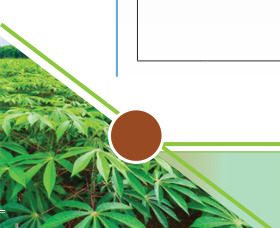
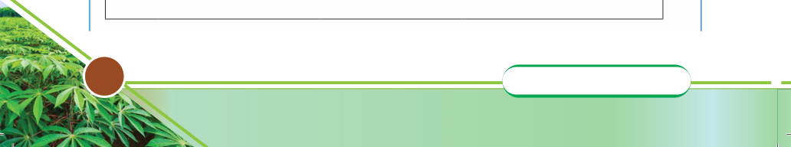

2. Using the factors above, suggest suitable areas for cassava, round potato, and
banana production.
Land preparation
Land preparation involves all the activities that make the land suitable for
planting and facilitate the germination or growth of planting materials and their
development. For rain-fed agriculture, land should be prepared well before the
onset of rains to give weeds and other vegetation enough time to dry up and
decompose into organic matter. Also, it needs enough time to allow carbon dioxide
and other gases to diffuse out of the soil while being replaced with oxygen, which
is essential for seed germination and the growth of beneficial soil organisms.
Early land preparation gives enough time for other subsequent operations to be
done, giving way to early planting. The proper time for land preparation differs
with the crop type; virgin land usually needs longer than non-virgin land. This is
because sufficient time is required for land clearing, ploughing, and harrowing.
Tillage
Land must often be subjected to some form of tillage before planting the crop.
Tillage involves changing soil conditions with a tool/implement to obtain ideal
conditions for seed germination, seedling establishment, and crop growth.
Tillage operations, done before planting, are collectively referred to as preparatory
tillage. They involve deep opening, loosening, or other soil manipulation to bring
about a desirable tilth, depending on the nature of the land and crop to be planted.
The tilth may be coarse, moderate, or fine, depending on the crop’s requirement
for growth.
Activity 1.3
1. Visit your school farm/nearby crop fields in your area, and or use internet/
video clips to study land preparatory activities done before planting a crop.
2. Then, use the following table to fill in, the observed land preparatory activities
that take place before planting the studied crop.
Name of the crop you have studied…………………………………
Location/place where the crop is grown…………………………….
The proper time for preparing land before planting the crop……….